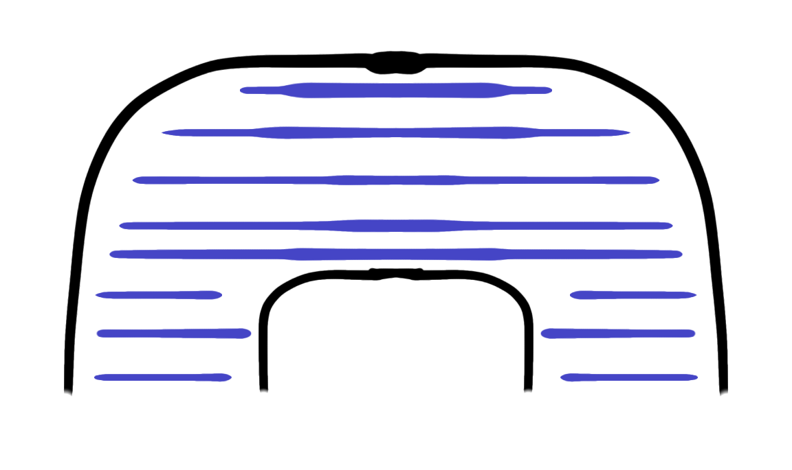
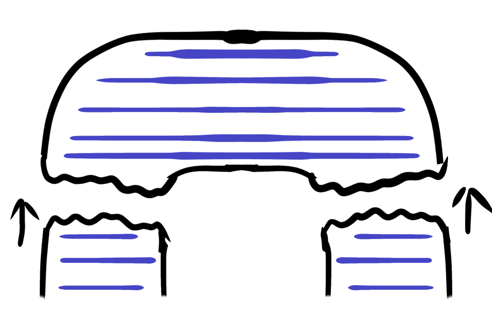
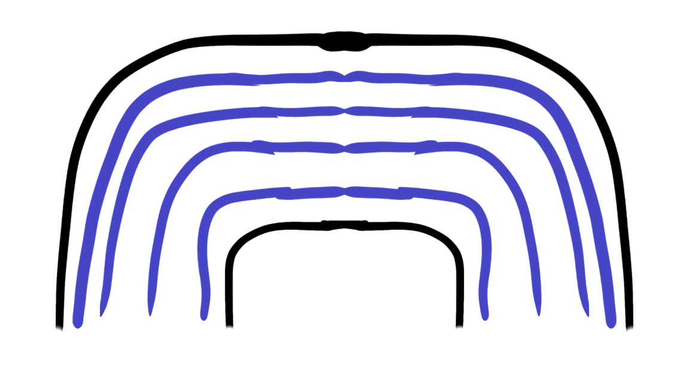
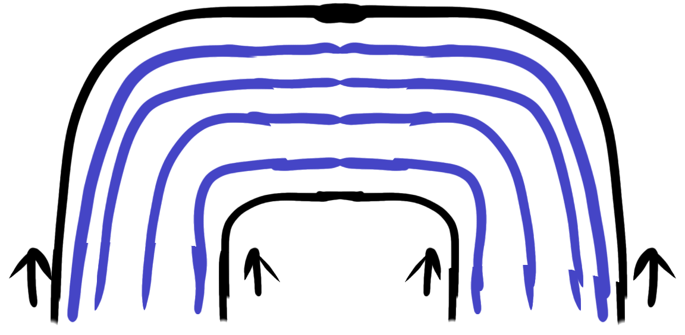

First Print


This is my first design in the modelling software, and the way it came out in my first, naive print. As you can see, stringing has broken up the pattern’s clarity quite a bit, and would take careful clipping to clean up.
The shank at the back also broke off, which is a bigger problem.


3d printing with wood has a major structural weakness, which is that the individual layers don't hold together very strongly. As you can see in this diagram, if you print with the disk of the button horizontal, the part of the shank that's under the most strain is between layer lines and breaks very easily.


On the other hand, if you print vertically, whie you do need more support, the shank is printed with the arms running parallel to the layer lines, which plays into the strength of the wood fibre along the line of the filament. It might even reduce the stringing, or at least make it easier to handle.